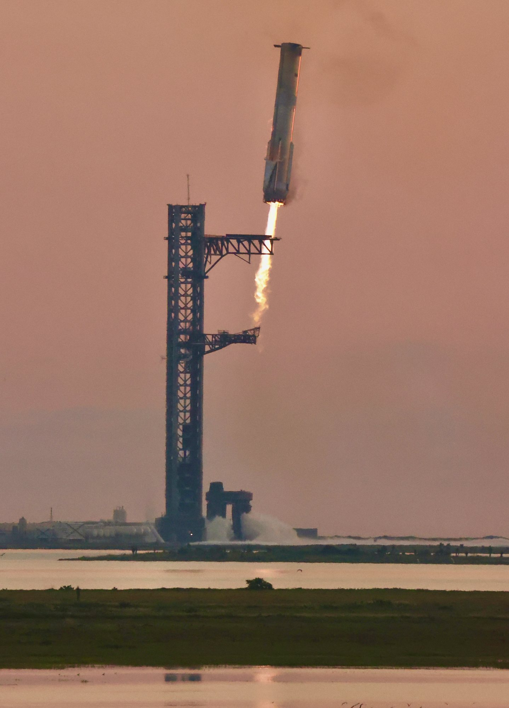
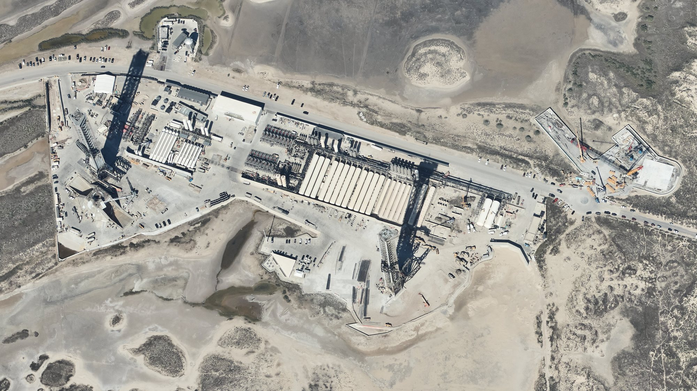

Martedì 20 ottobre, poco dopo le 22 ora italiana, SpaceX ha pubblicato i conti del terzo trimestre 2026, il secondo da quando è quotata al Nasdaq. Mezz’ora più tardi, in diretta su X dalla fabbrica Starlink di Bastrop, in Texas, Elon Musk, Gwynne Shotwell e il direttore finanziario Bret Johnsen li hanno commentati per oltre un’ora. I numeri hanno superato di molto le attese degli analisti, ma la notizia che resterà è un’altra: per la prima volta SpaceX proverà a recuperare un razzo orbitale per intero, primo e secondo stadio, già con il prossimo volo di Starship.
I numeri: l’intelligenza artificiale supera tutto il resto
Il dato principale è la crescita. I ricavi sono passati dai 5,6 miliardi di dollari del terzo trimestre 2025 a 14,6 miliardi, quasi il doppio anche rispetto ai 7,8 miliardi del trimestre precedente. Gli analisti si aspettavano circa 12,7 miliardi. L’utile operativo è di 2,8 miliardi, l’utile netto di 4,4 miliardi, e l’EBITDA rettificato, cioè il margine prima di interessi, tasse e ammortamenti, sale a 8,8 miliardi, più 306 per cento in un anno.
Per la prima volta il segmento più grande non è lo spazio né Starlink, ma quello che SpaceX chiama Super Intelligence, la divisione nata dall’acquisizione di xAI a febbraio. Ha fatturato 7,6 miliardi, nove volte più di un anno fa, grazie ai contratti con cui SpaceX affitta potenza di calcolo ad altre aziende, all’acquisizione di Cursor, chiusa a metà trimestre e già valsa 608 milioni, e alla crescita di Grok e del suo assistente Grok Bot. Alla fine di settembre SpaceX aveva 1,7 gigawatt di capacità di calcolo installata, contro 0,6 di un anno prima; punta a quasi 2 gigawatt entro fine ottobre e a 2,5-3 entro dicembre.
Starlink, il segmento Connectivity, ha fatturato 5,25 miliardi, più 69 per cento. Gli abbonati consumer sono 13,6 milioni, 1,6 milioni in più in tre mesi, con una spesa media di 69 dollari al mese. Il servizio è attivo in 174 Paesi, Vietnam e Uganda compresi, ed è contrattualizzato su circa 12.000 aerei, quasi un quarto della flotta mondiale disponibile. Starlink Mobile, il servizio diretto ai telefoni, ha superato i 22 milioni di utenti mensili. Il segmento Space, cioè lanci e Dragon, vale invece 1,8 miliardi: è la parte più piccola, ma è quella che deve rendere possibile tutto il resto.

Flight 15: la prova del recupero totale
Musk ha aperto la presentazione proprio da Starship. Il Flight 14 del 28 settembre è stato il primo volo orbitale del sistema e ha rilasciato 26 satelliti Starlink V3, la nuova generazione: SpaceX lo conta come la prima missione commerciale di Starship. Quei satelliti hanno aggiunto alla rete circa 26 terabit al secondo, l’equivalente di dieci lanci Starlink con il Falcon 9, e Musk ha precisato che il razzo viaggiava caricato più o meno a metà.
Poi l’annuncio: con il Flight 15, «che ci aspettiamo il mese prossimo», SpaceX proverà a catturare con i bracci della torre sia il Super Heavy sia la Ship. «Se ci riusciamo, sarà la prima volta che un lanciatore orbitale viene recuperato completamente», ha detto Musk, che giudica il successo al primo tentativo «più probabile che no». In caso contrario, ha aggiunto, ci sono altri voli di Starship in programma fino alla fine dell’anno e un ritmo che accelererà nel 2027. Il booster è già stato catturato tre volte, nei voli 5, 7 e 8, ma la Ship non è mai stata recuperata: rientra dall’orbita a velocità molto più alte e finora ha sempre concluso il volo in mare.
Durante la diretta SpaceX ha mostrato un’animazione di circa ottanta secondi, sotto il titolo «Up Next: Ship Catch». La Ship rientra di pancia, con le alette che guidano la discesa, si raddrizza sopra la costa di Starbase e scende lungo la torre fino a fermarsi fra i bracci. È la manovra già provata a terra a settembre, quando la Ship 42, assegnata al Flight 15, è stata sollevata dalla torre del Pad 2 nella posizione di cattura. Il veicolo però non è ancora pronto: SpaceX ha tolto i motori prima dell’accensione statica e lo ha rimandato a un’altra prova criogenica. Al Pad 2 intanto è stato provato a pieno il sistema d’acqua che protegge la rampa, in vista dell’arrivo del Booster 22.

La FAA e il ritorno sopra la terraferma
Il recupero della Ship non dipende solo dalla tecnica. Per tornare alla torre il secondo stadio deve rientrare passando sopra la terraferma invece che sopra l’oceano aperto, e serve il via libera della FAA, l’autorità americana dell’aviazione civile. Gwynne Shotwell, presidente e direttrice operativa di SpaceX, ha parlato di un confronto «significativo e costruttivo» con l’agenzia e ha detto che l’azienda si aspetta una licenza per il Flight 15 che includa il ritorno al sito di lancio e la cattura con la torre per entrambi gli stadi. A febbraio Musk aveva posto come condizione due atterraggi perfetti in mare, per rendere molto bassa la probabilità che la Ship si spezzi sopra zone abitate.
Shotwell ha anche ripetuto gli obiettivi successivi: riportare alla torre entrambi gli stadi entro quest’anno, far rivolare una Ship già usata entro l’inizio del 2027, provare il primo rifornimento di propellente in orbita all’inizio del prossimo anno. Dal 2027 Starship comincerà a lanciare i satelliti Starlink Mobile V2 e i primi Starmind, i satelliti con computer per l’intelligenza artificiale in orbita. Musk punta a un volo di Starship a settimana nella prima metà del 2027 e a due o più a settimana entro la fine dell’anno, con razzi che atterrano e ripartono senza revisioni, «come un aereo».

Quanto costa Starship, e dove andrà
Dai documenti finanziari si ricava che nel trimestre SpaceX ha speso circa un miliardo di dollari nello sviluppo di Starship. Gli investimenti complessivi sono stati di 19,6 miliardi in tre mesi, soprattutto in centri di calcolo, ma anche in motori Raptor, nella nuova Mega Bay e nelle rampe di Starbase e di Cape Canaveral. Per il quarto trimestre Johnsen prevede fra 35 e 40 miliardi di investimenti. A fine settembre SpaceX aveva in cassa circa 90 miliardi e contratti già firmati per 63 miliardi, 42 dei quali da incassare entro un anno.
Fra i nuovi contratti del trimestre ci sono tre missioni con equipaggio verso la Stazione spaziale internazionale per la NASA, 18 lanci per la sicurezza nazionale americana, tre missioni Starfall su Starship e un trasporto di carico sulla superficie lunare. Starfall, la capsula di SpaceX per esperimenti in microgravità, aveva volato proprio la mattina del 20 ottobre con la missione Bandwagon-5.
Poi c’è la Louisiana. Ad agosto SpaceX ha annunciato Starbase Louisiana, un sito da 100 miliardi di dollari nella parrocchia di Vermilion, pensato per migliaia di lanci di Starship all’anno. Musk immagina «una ventina o più» di torri di lancio e milioni di tonnellate all’anno verso l’orbita. Nei documenti il primo lancio è previsto per il 2029; in diretta Musk ha detto che l’obiettivo interno è il 2028, ma che il 2029 è «molto probabile». Mancano ancora i permessi ambientali e quelli sulle zone umide.

La fusione con Tesla
La domanda più attesa è arrivata da un analista di Deutsche Bank. Musk ha premesso di sentirsi come chi «balla il tip tap in un campo minato», poi ha confermato che SpaceX e Tesla, su richiesta degli azionisti, hanno creato comitati di consiglieri indipendenti per valutare una fusione. Lui non partecipa, perché è in conflitto di interessi, e i comitati non hanno ancora trovato un accordo. «Penso che sarebbe una buona idea? Sì», ha detto, ma la decisione spetta agli azionisti: per Tesla serve il voto favorevole della metà di tutte le azioni, non solo di quelle presenti al voto, una soglia molto alta.
Le ragioni, per Musk, sono il software di intelligenza artificiale, il progetto dei chip, la fabbrica Terafab, i robot, le connessioni e i satelliti Starmind. C’è anche un aspetto di controllo: Musk ha oltre l’82 per cento dei voti in SpaceX e circa il 20 per cento in Tesla, e una società unica potrebbe dargli la maggioranza anche sulla parte automobilistica. Alla data dell’annuncio SpaceX valeva in Borsa circa 2.000 miliardi di dollari, Tesla circa 1.500. Un’operazione del genere passerebbe comunque dalle autorità americane. Tesla presenta i suoi conti stasera, dopo la chiusura di Wall Street.
Le previsioni e i dubbi
L’ultima parte è la più ambiziosa. Johnsen ha confermato l’obiettivo di 100 miliardi di dollari di ricavi annualizzati, calcolati sul mese di dicembre, entro fine anno, e ha dato una previsione di 33-37 miliardi di ricavi per il solo primo trimestre 2027: le stime medie degli analisti erano intorno ai 22. Musk è andato oltre, ipotizzando fra 500 e 1.000 miliardi di ricavi annualizzati a fine 2027, e in nottata ha scritto su X che mille miliardi di ricavi nel 2028 «non sono più impossibili». Sono cifre che dipendono quasi tutte dalla vendita di potenza di calcolo, un mercato oggi affamato ma legato a contratti brevi, e che in passato le previsioni di Musk hanno spesso mancato nei tempi.
Per chi segue SpaceX come azienda spaziale, il quadro è chiaro: i soldi arrivano sempre più dall’intelligenza artificiale, ma il piano tiene solo se Starship diventa davvero riutilizzabile e frequente, perché è il razzo che deve portare in orbita i satelliti V3, i Mobile V2 e i futuri centri di calcolo. Il Flight 15 è il primo esame. Le cose da seguire sono tre: la licenza della FAA, la data del volo, che Musk aveva collocato poco prima del Ringraziamento americano del 26 novembre, e l’eventuale accordo fra i comitati di SpaceX e Tesla.
Il dossier sulla promessa di Musk di regalare un’azione SpaceX a ogni bambino americano passa all’archivio Notizie: in primo piano, oggi, ci sono i conti del terzo trimestre e il doppio catch.
Fonti pubbliche e tracce
Ultimo aggiornamento editoriale: 21 ottobre 2026, ore 12:40 (ora italiana). Nel corpo non si ripete la fonte a ogni frase: le tracce sono raccolte qui. Gli orari sono convertiti in ora italiana. Non è consulenza finanziaria.
- SpaceX, comunicato sui risultati del terzo trimestre 2026 depositato presso la SEC: ricavi, utile, EBITDA rettificato, segmenti, 1,7 GW di calcolo, nuovi contratti, Starbase Louisiana con primo lancio previsto nel 2029.
- SpaceX su X, 20 ottobre 2026, ore 22:09 italiane: pubblicazione del rapporto e annuncio della diretta.
- SpaceX su X, 20 ottobre 2026, ore 22:13 italiane: sintesi del trimestre e grafica con i dati operativi.
- Trascrizione della presentazione dei conti Q3 2026 (Quartr, via Stock Analysis): interventi di Musk, Shotwell e Johnsen su Flight 14 e 15, FAA, cadenza di Starship, Louisiana, Starlink, previsioni, fusione con Tesla.
- CNBC, aggiornamenti in diretta, 20 ottobre 2026: confronto con le stime LSEG, rialzo di circa l’8% dopo la chiusura, previsione per il primo trimestre 2027 contro una media di 22,2 miliardi attesi.
- Teslarati, Joey Klender, 20 ottobre 2026: dettaglio dei segmenti, abbonati Starlink, cassa di circa 90 miliardi.
- Teslarati, 20 ottobre 2026: animazione «Up Next: Ship Catch», prove della Ship 42 al Pad 2, catch precedenti, Flight 15 poco prima del Ringraziamento.
- Ars Technica, Eric Berger, 20 ottobre 2026: fusione con Tesla, quote di voto di Musk, valutazioni delle due società.
- Eric Berger su X, 20 ottobre 2026, ore 22:59 italiane: circa un miliardo di dollari speso nello sviluppo di Starship nel trimestre.
- Spaceflight Now su X, 20 ottobre 2026, ore 22:42 italiane: Flight 15 «expected to happen next month» con tentativo di catch dei due stadi.
- Rough Riders Show su X, rilanciato da NASASpaceflight, 21 ottobre 2026: prova completa del sistema d’acqua al Pad 2 in vista del Booster 22.
- Elon Musk su X, 21 ottobre 2026, ore 0:05 italiane: «$1T in SpaceX revenue in 2028 is no longer impossible».
- Reuters, Joey Roulette, 25 agosto 2026: Starbase Louisiana, 100 miliardi di dollari, costruzione dal 2027.
Fotografie utilizzabili
Tre immagini sono libere: il Super Heavy in avvicinamento alla torre è di Steve Jurvetson, licenza CC BY 2.0; il ritratto di Gwynne Shotwell è della NASA e la veduta di Starbase è della NOAA, entrambe di pubblico dominio. La copertina, fotogramma dell’animazione del Flight 15, e la grafica con i dati del trimestre sono materiali ufficiali SpaceX dell’evento, usati con credito SpaceX · uso editoriale non commerciale. Dettagli in scheda dei crediti fotografici.
Apri il dossier sulle azioni ai bambini archiviato · Archivio Notizie · Torna a SpaceX